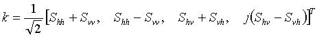
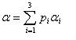
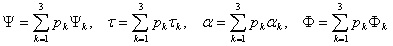
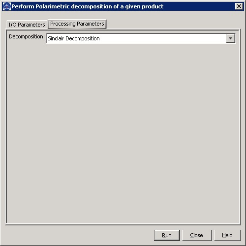
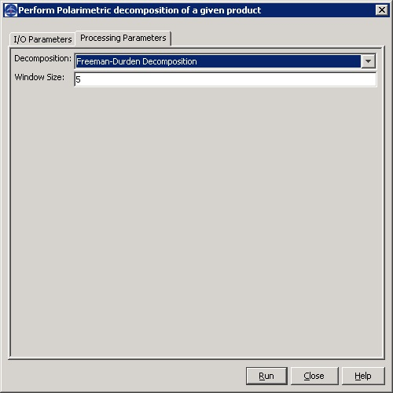
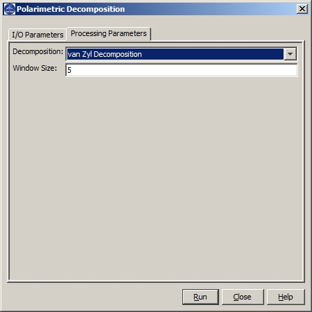

Polarimetric Decomposition Operator
This operator performs the following polarimetric decompositions for a full polarimetric SAR product:
- Sinclair Decomposition
- Pauli Decomposition
- Freeman-Durden Decomposition
- Yamaguchi Decomposition
- H-a Alpha Decomposition
- Touzi Decomposition
- Van Zyl Decomposition
Sinclair Decomposition
Let

be the complex scatter matrix. The Sinclair decomposition produces (R,
G, B) bands with the following intensities
- Red: |Svv|2,
- Green: |(Shv + Svh)/2|2,
- Blue: |Shh|2,
The main drawback of this decomposition is the physical interpretation of the resulting RGB image.
Pauli Decomposition
The (R, G, B) bands produced by the Pauli decomposition correspond to the following intensities:
- Red: 0.5*|Shh - Svv|2, which represents the contribution of single- or odd-bounce scattering to the final measured scattering matrix
- Green: 0.5*|Shv + Svh|2, which represents the scatter power by targets that are able to return
the orthogonal polarization, for example the volume scattering produced
by the forest canopy
- Blue: 0.5*|Shh + Svv|2, which represents the power scattered by targets characterized by double- or even-bounce
Freeman-Durden Decomposition
The Freeman decomposition models the covariance matrix as the contribution of three scattering mechanisms:
- canopy scatter from a cloud of randomly oriented dipoles, forest for example;
- even- or double-bounce scatter from a pair of orthogonal surfaces with different dielectric constants;
- Bragg scatter from a moderately rough surface.
The power scattered by the components of the above three scattering
mechanisms are employed to generate a RGB image as the following:
- Red: the power scattered by the double-bounce component of the covariance matrix
- Green: the power scattered by the volume scattering component of the covariance matrix
- Blue: the power scattered by the surface-like scattering component of the covariance matrix
Yamaguchi Decomposition
The three-component Freeman-Durden decomposition can be
successfully applied to SAR observations under the reflection symmetry
assumption. However, there exists areas in an SAR image where the
reflection symmetry condition does not hold. Yamaguchi et al. proposed,
in 2005, a four-component scattering model by introducing an additional
term corresponding to nonreflection symmetric cases. The fourth
component introduced is equivalent to a helix scattering power. This
helix scattering power term appears in heterogeneous areas (complicated
shape targets or man-made structures) whereas disappears for almost all
natural distributed scattering. Therefore, Yamaguchi decomposition
models the covariance matrix as the following four scattering
mechanisms:
- volume;
- double-bounce;
- surface; and
- helix scatter components.
H-A-Alpha Decomposition
The H-A-Alpha decomposition is based on the eigen decomposition of the coherency matrix [T3]. Let λ1, λ2, and λ3 be the eigenvalues of the coherency matrix (λ1 > λ2 > λ3 > 0), and u1, u2 and u3 be the corresponding eigenvectors which can be expressed as the following:
Then three secondary parameters are defined as the follows:
- Entropy:
- Anistropy:
- Alpha:

Touzi Decomposition
In 2007, for the monostatic scattering case, Ridha Touzi
has proposed a new Target Scattering Vector Model (TSVM) [2]. Based on
the Kennaugh-Huynen decomposition, this model allows to extract four
roll-invariant parameters:
- Kennaugh-Huynen maximum polarization parameter: orientation angle (Ψ);
- Kennaugh-Huynen maximum polarization parameter: helicity (τ);
- Symmetric scattering type magnitude (α);
- Symmetric scattering type phase (Φ).
The roll-invariant incoherent target decomposition, i.e. Touzi decomposition, is as the following:
- Compute target coherency matrix [T3] with a sliding window;
- Perform eigendecomposition on the coherency matrix;
- Apply the new target scattering vector model to each eigenvector to extract four parameters (Ψk, τk, αk, Φk, k = 1, 2, 3).
- Compute averaged parameters (Ψ, τ, α, Φ):

Van Zyl Decomposition
The Van Zyl decomposition assumes that the reflection
symmetry hypothesis establishes and the correlation between
co-polarized and cross-polarized channels is zero. The assumption is
generally true in case of natual media such as soil and forest. With
such an assumption, the eigen decomposition of the averaged covariance
matric C3 can be given analytically and C3 can be expressed in the following manner:

The van Zyl decomposition thus shows that the first two eigenvectors
represent equivalent scattering matrices that can be interpreted in
terms of odd and even numbers of reflections.
Input and Output
- The
input to this operator can be a full polarimetric SAR product with 8
bands,
i.e. I and Q bands for HH, VV, HV and VH polarizations, or covariance
matrix generated by Covariance Matrix Generation operator, or coherency
matrix output by Coherency Matrix Generation operator.
- The output of this operator are bands corresponding to the decomposition result.
Parameters Used
For all decompositions, the following processing parameter is needed (see Figure 1):
- Decomposition: the decomposition method

Figure 1. Dialog box for
Polarimetric Decomposition operator
For Freeman-Durden decomposition, an extra parameter is needed (see Figure 2):
- Window Size: dimension of sliding window for computing mean covariance or coherence matrix

Figure 2. Dialog box for Freeman-Durden decomposition
For Yamaguchi decomposition, the following parameters are needed (see Figure 3):
- Window Size: dimension of sliding window for computing mean covariance or coherence matrix

Figure 3. Dialog box for Yamaguchi decomposition
For H-A-Alpha decomposition, the following extra parameters are needed (see Figure 4):
- Window Size: dimension of sliding window for computing mean covariance or coherence matrix
- Checkbox for outputing parameters Entropy (H), Anistropy (A) and Alpha
- Checkbox for outputing parameters Beta, Delta, Gamma and Lambda
- Checkbox for outputing parameters Alpha1, Alpha2 and Alpha3
- Checkbox for outputing parameters Lambda1, Lambda2 and Lambda3

Figure 4. Dialog box for H-A-Alpha decomposition
For Touzi decomposition, the following extra parameters are needed (see Figure 5):
- Window Size: dimension of sliding window for computing mean covariance or coherence matrix
- Checkbox for outputing parameters Psi, Tau, Alpha and Phi
- Checkbox for outputing parameters Psi1, Tau1, Alpha1 and Phi1
- Checkbox for outputing parameters Psi2, Tau2, Alpha2 and Phi2
- Checkbox for outputing parameters Psi3, Tau3, Alpha3 and Phi3

Figure 5. Dialog box for Touzi decomposition
For Van Zyl decomposition, the following parameters are used (see Figure 6):
- Window Size: dimension of sliding window for computing mean covariance or coherence matrix

Figure 6. Dialog box for Van Zyl decomposition
Reference:
[1] Jong-Sen Lee and Eric Pottier, Polarimetric Radar Imaging: From Basics to Applications, CRC Press, 2009
[2] R. Touzi, “Target Scattering Decomposition in Terms of
Roll-Invariant Target Parameters,” IEEE Transactions on Geoscience and
Remote Sensing, vol. 45, no. 1, pp. 73–84, January 2007.